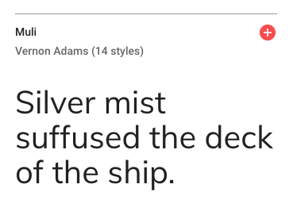
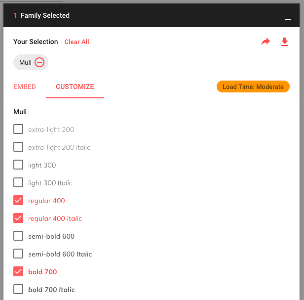
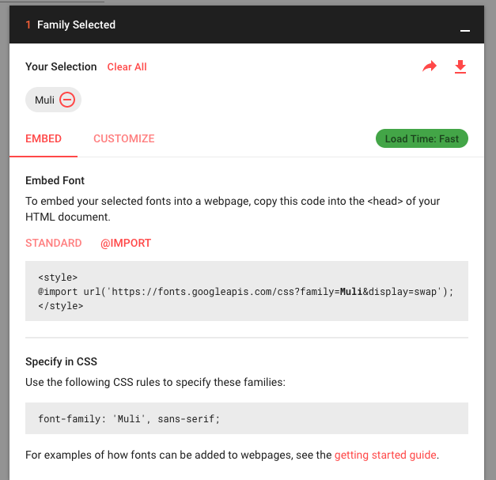
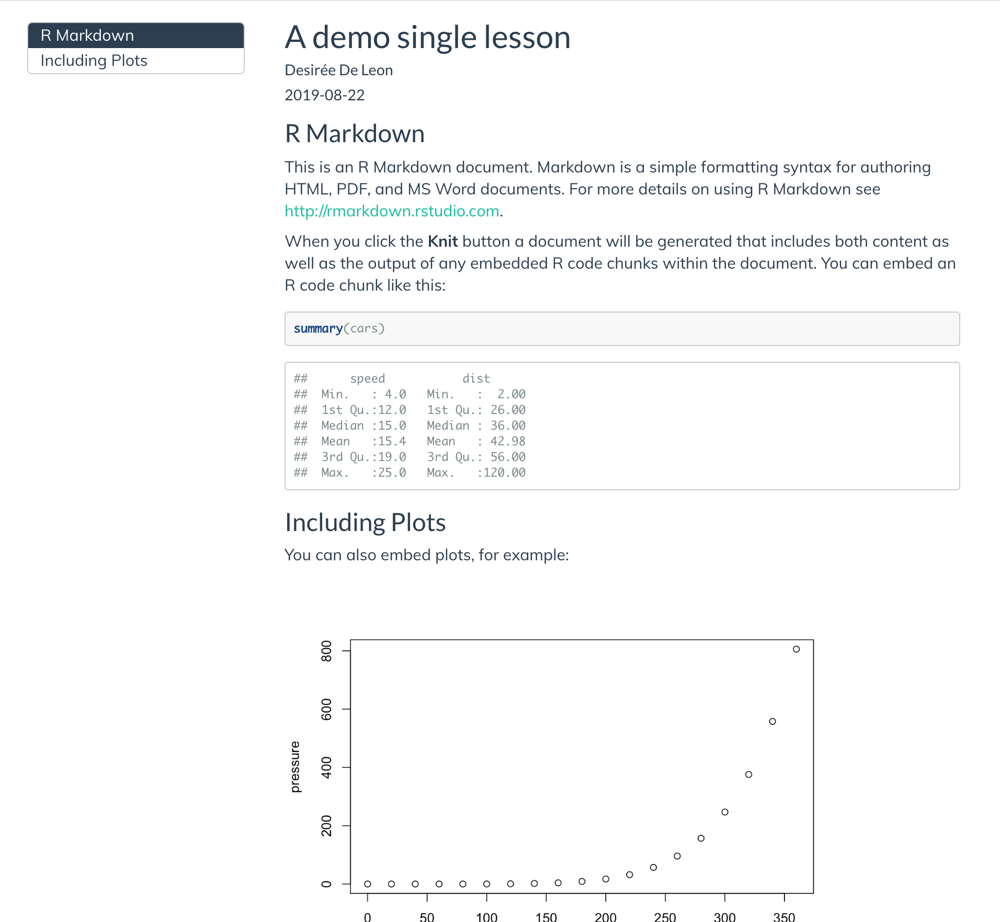
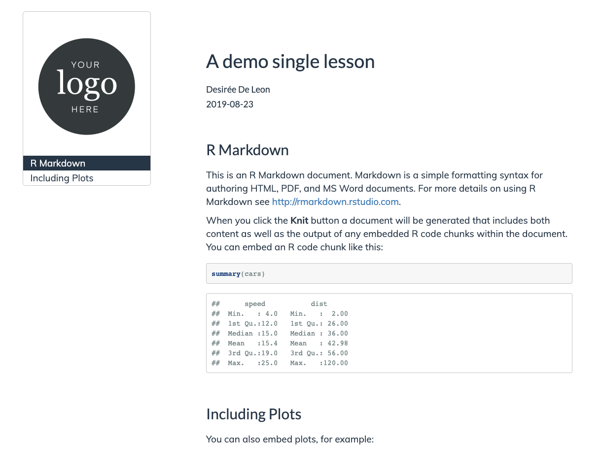
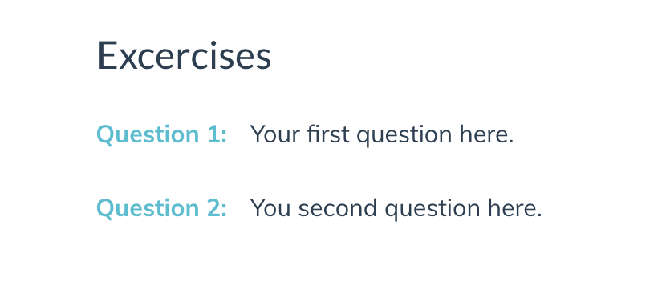

Chapter 20 Make it fancier
Once youâve built the basic structure for your R Markdown site, if youâd like to customize it even further, here are a handful of things you can add.
The steps below involve a little bit of HTML and CSS work, but you donât have to have much experience in these methods to be able to build something cool.
In this section, Iâll walk you through the non-YAML âadd onsâ to your R Markdown site.
Youâll get the most out of this chapter if you read through the CSS crash course before diving in. Youâll want to be familiar with using the Developer Tools of your web browser and selectors.
20.1 Before you begin
Iâm making a few assumptions that by this point you have already updated your R Markdown site with your own content in the Make it yours section and added whatever built-in options you wanted.
For the demo that follows, Iâll keep using the RMD site skeleton with a few additions. Iâve added a few things to the site skeleton, aside from what weâve walked through in the previous chapters, so that the following examples make more sense. It is okay that your content does not match up exactly with mine.
- A dropdown menu to the navbar
- Additional level 1 headers to the home page
- Turned on a floating table of contents
- Added github and twitter icons to the navbar
- We chosen yeti as our theme
- A note about choosing a theme. To start out, choose a theme whose navbar most closely matches what youâre final vision is. For example, if you want your navbar (and dropdown menus) to be dark with a light colored text, then sticking with Yeti is cool. But if you want a light colored navbar with dark text, sticking with Yeti as the base theme would mean you have a lot more CSS that will need adjusting, and youâre better off using a theme like
defaultas your baseline.
- A note about choosing a theme. To start out, choose a theme whose navbar most closely matches what youâre final vision is. For example, if you want your navbar (and dropdown menus) to be dark with a light colored text, then sticking with Yeti is cool. But if you want a light colored navbar with dark text, sticking with Yeti as the base theme would mean you have a lot more CSS that will need adjusting, and youâre better off using a theme like
20.3 Adding custom CSS to your site
- Make a CSS file, by going to File > New File > Text File.
- Save this file in your project directory as
style.css. - Add this
css:field to your_site.yml.
output:
html_document:
css: style.css[commit]
20.4 Aesthetics and branding
Everything that makes your site, look like your site.
- Google fonts
- Link color and hover behavior
- Add a logo
- Favicon
- Hero image
20.4.1 Google fonts
To change the appearance of your text with a new font, you need to:
- Pick a Google font
- Add it to your CSS file
- Style specific text using CSS selectors
- Make sure your CSS file is linked in your
_site.yml(and if youâve been following along, it already is).
20.4.1.1 Select and import your Google fontâs script
- Go to https://fonts.google.com/ and pick a font for your lessonâs main body text. Iâm choosing
Muli, butLatoandSource Sans Proare other nice options.
I recommend going with sans-serif fonts (i.e. no little feet on the letters) for the main text because theyâre easier to read at smaller sizes on screens compared to serif fonts. Donât pick anything too narrow, too wide, or ornate.)
Select the font you want by clicking on the upper red
+sign, and navigate to the small pop up window.Figure 20.1: Selecting a Google font
Click on the
CUSTOMIZEtab, and select the extra font weights and styles you want. Donât check any that you donât think youâll use (because it slows down your lessonâs loading time ever-so-slightly when you add more). In addition to regular, Iâm choosing one italic and one bold.Figure 20.2: Choosing additional font weights and styles
Now click on
EMBEDand look under the@IMPORTtab. Copy the code within the<style>tags (you donât need the style tags themselves). We will also need the second code chunk in a couple steps that saysSpecify in CSS, so keep this page open to come back to that.Figure 20.3: Getting the script to import your Google Font
20.4.1.2 Import the font to your site
Back in the RStudio IDE, open up your
style.cssfile.On the very first line, paste in the Google Font import code for the
Mulifont. This makes the font available within your site but doesnât use the font yet.@import url('https://fonts.googleapis.com/css?family=Muli:400,400i,700&display=swap');
You might see others import Google fonts by embedding the script (with <script> tags) in an HTML file instead. This is perfectly legitimate. But if youâre just starting out, itâs easier to keep all the font stuff together in a CSS file, which is why weâre doing it this way.
20.4.1.3 Apply the font to your text
We have our font imported, but now we have to be explicit with R Markdown about where to apply it. Letâs create our first CSS style rule below. We will apply the Muli font to our bodyâs text by using the font-family: property.
Copy and paste the following style rule to
style.cssbeneath the other line of CSS weâve already added.Letâs also specify the font size to be
19pxby adding thefont-size:property./*------------- Whole Document---------------- */ body { font-family: 'Muli'; font-size: 19px; }Make sure that each line within
{}ends with a;.
Keep tidy! Organize your CSS using comments like /* --insert-comment-- */ to create make-shift section dividers for your CSS, as weâve done above. Weâll be adding many style rules, and weâll want some way to keep track of everything as our CSS file grows.
- Time to admire your handiwork and decide whether or not you like it. You can repeat the steps above to apply different fonts to different parts of your lesson. For example, you could create another style rule using
.titleinstead ofbodyto apply a different font to the Title of your lesson.
Remember that in order for any of your CSS to take effect, your style.css file has to first be referenced in your YAML.

[commit]
20.4.2 Customize your links
Their color, but also what color they turn when you hover over them.
/* links */
a {
color: #5ebccf;
}
a:hover {
color: #50a0b0; /* darker color when hovering */
}[commit]
20.4.3 White space
If you added white space manually before in an earlier section with either
or \, you can remove them because weâre about to add white space in a less manual way.
Weâll take advantage of the fact that we know major sections will be divided by section headers, so weâll tack on some padding on top of each section header.
Weâre adding what seems like a lot of paddingâbut thatâs because our theme by default is going to undo some of this padding with a negative value for the margin-top: property. I know this seems absurdâwe wonât get into the details here, but the negative margin is needed so that our headers donât get hidden behind the navbar when your share links to particular sections of your site.
Weâre going to style the title a little differently than the rest of the headers, so weâll pull it out on its own. It doesnât need as much space as the other headers do.
/*----------------ADDING WHITE SPACE-------------*/
.title {
margin-top: 2em !important;
margin-bottom: 0.75em;
}
.section h1,
.section h2,
.section h3,
.section h4,
.section h5 {
padding-top: 3em !important; /*adding so much padding because theme adds a margin-top: -65px by default */
margin-bottom: 0.75em;
}[commit]
Weâll also add more white space in between the TOC and the rest of the body content, but we do this only when we have the space toâ in other words, when our userâs screen is large enough.
For this, weâll have to use our first media-query.
A media query is like an additional outer rule that says, âhey, only apply the CSS rule inside if [insert condition about screen width here] is metâ. Media queries are useful for styling something different on a big screen than you would on mobile, etc.
In the case below, we only increase the space between the TOC and the body content if your userâs browser screen is at least
992pxwide:
/* Space Between TOC and
Righthand side content on large screens */
@media (min-width: 992px) {
.col-md-9 {
width: 75%;
padding-left: 5em !important;
}
}
[commit]
20.4.5 Add a logo
Weâll add a logo above our table of contents. The main way weâre going to do this is by inserting a blank box above our TOC, and then giving the blank container a background image (our logo). We can control how big our logo will be by controlling the size of the box. Hereâs what it will look like (if youâre bothered by the outline around it all, donât worryâweâll get rid of that in the TOC section):
Add your logo image to your project directory.
Paste the CSS style rule below. Weâll break it down in a second.
/*----------LOGO above TOC---------*/ #TOC::before { content: ""; display: block; height: 200px; margin: 2em 20px 40px 20px; background-image: url("logo-black.png"); background-size: contain; background-position: center center; background-repeat: no-repeat; }- This uses the selector
#TOCto identify our table of contents. - I use the CSS trick of tacking on a
::beforeto say, âhey, I want you to insert whatever is in this style rule right before our#TOC.â This trick is called using a âpseudo-elementâ in CSS. - In this case, my pseudo-element is a blank boxâthatâs why it says
content: "";. Thereâs nothing in there. ButâI still give my blank box some dimension with theheight:property. - The blank box is no longer blank once I use the logo as its background image.
- This uses the selector
Change the image url to use your own image.
Build your site and check out the results. If you need to adjust the size of your logo, you can fiddle with the
height:property in the CSS above.
20.4.5.1 A second logo option
If you chose not to use a floating table of contents, then adding a logo the way we have above wonât work since there wonât be a #TOC that a logo can go ahead of. So, you can instead place your logo in upper righthand corner, in line with the Title and Author.
Add your logo image to your project directory.
Open
style.css.Paste this CSS rule into your CSS file:
#header.fluid-row::before { content: ""; height: 150px; width: 150px; float: right; background-image: url("logo-black.png"); background-size: contain; background-position: center center; background-repeat: no-repeat; }Edit the image url to be your own image file path.
Save your changes and knit your
.Rmdlesson to see your logo. You can fiddle with theheight:property to adjust the logo size.
20.4.5.2 A third logo option
But waitâthereâs more! Here is a third option for adding a logo if you want it in the upper righthand corner, above the Title and Author fields. I personally like this one the least (asethetically, but also because itâs more involved to implement), but sometimes you might need to do this if you find that your title and content keep running into the logo with option 2.
To do this, you will need three things:
- A different CSS style rule
- An HTML file with one line of code
- To edit
_site.ymlso you can reference the HTML file
20.4.5.2.1 Create an HTML container
We need something that we can put our logo intoâ like an empty container. This is where the HTML file comes in. This file will hold an empty tag inside of it, but weâll still give the empty tag a name, âupper-right-logoâ, so that we can fill it up with our logo later using CSS. Letâs make the HTML file:
From the IDE, youâll create a new HTML file by going to File > New File > Text File.
Paste the line of code below into the HTML file.
<div class="upper-right-logo"> </div>Save this file as
logo-option.html. You can choose a different name if you want.
20.4.5.2.2 Link the HTML file to your YAML
Now we have a containter (via our HTML file), but R Markdown needs to know where to put it with respect to our page. Thatâs where _site.yml comes in. We will add two fields to our _site.yml: includes: and before_body: logo-option.html. This is how we have R Markdown place the empty container in the right spotâ as the first item in the body tag of our page (the name âbeforeâ body is kind of a misnomer).
Open your
.Rmdfile.Add the
includes:andbefore_body:lines.--- output: html_document: includes: before_body: logo-option.html theme: yeti highlight: tango toc: true toc_float: false ---Edit the filename to be your HTML file if you chose a different file name.
Save your changes.
20.4.5.2.3 Fill the container with your logo
Finally, the CSS is where weâll say âtake the empty container we created in the HTML file, and make sure itâs yay tall and that it has this logo image as its background, etc.â
Hereâs how that goes down:
Add your logo image to your project directory.
Open
style.css.Paste this CSS rule into your CSS file:
.upper-right-logo { margin-top: 20px; background-image: url("logo-black.png"); height: 150px; background-size: contain; background-position: right; background-repeat: no-repeat; }Edit the image url to be your own image file path.
Save your changes and knit your
.Rmdlesson to see your logo. You can fiddle with theheight:property to adjust the logo size.
I wonât use this logo option in the demo lesson as we move on to the next steps, but now you know how to do it if you need it.
20.4.6 Add a favicon
You know the little tiny icon that gets placed in the corner of your browser tabs or gets placed in the bookmarkâs bar? Thatâs a favicon!
To add a favicon you need:
- An HTML file with one line of code
- An image to use as your favicon
- To edit
_site.ymlso you can reference the HTML file.
20.4.6.1 Choose your favicon image
- Choose an imageâdonât have one? You can make one with a favicon generator. I chose the emoji graduation cap.
- Save the image youâd like to use as (use a PNG or ICO file) and place it in your project directory (for the best results, use a square or circular image).
20.4.6.2 Embed the favicon in an HTML file
Make a new HTML file by clicking File > New File > Text File.
Insert the following, replacing
favicon.icowith your image filename.<link rel="icon" type="image/png" href="favicon.ico"/>Save this file as
header.html. You can choose a different name.
20.4.6.3 Reference the HTML file in _site.yml
We want this HTML file to go in the <head> tag of our site. The head tag is like the Font Desk/ admin of our siteâand its the place where the favicon will be taken care of.
Open
_site.yml.Under the
html_document:section, insert theincludes:andin_headeroptions like so:output: html_document: includes: in_header: header.html
If you already have a file that youâve included with the in_header field, then you can open up that file, and add the favicon line of code at the top of your existing file, OR you can list both header files separately, by listing them within brackets like this: [header.html, <other-file.html>,]. The order you list them in is the order that the browser will use them (which is only really important to know so that if you need to troubleshoot, you can try swapping the order).
[commit]
20.4.7 Add a hero image
To add the big image at the top of page (a.k.a hero image), we need to make an HTML file containing our image and text.
Letâs add one to only our homepage.
Weâll need:
- An HTML file
- To edit the YAML of our index.Rmd
- A image to use as our hero image
- CSS
- To adjust the table of contents positioning
- Aspirational step: to tweak for mobile
How to do it:
20.4.7.1 Make an HTML file
Go to File > New File > Text File.
Copy and paste the HTML code below into this file (see Figure 20.4 to decode this!)
<div class="hero-image"> <div class="image-text"> <div class="top-text">DATA 101</div> <div class="bottom-text">Intro to Data Science</div> </div> </div>Replace âDATA 101â with the text that youâd like to see on the top line.
Replace âDATA SCIENCEâ with whatever text youâd like to see on the bottom line.
Close and Save this file in your project directory as
hero-image.html. The name of the file does not have to behero-image.
Hereâs what each of the lines in hero-image.html is doing:
Figure 20.4: Decoding the hero-image.html file
20.4.7.2 Have R Markdown apply the HTML file
- Open
index.Rmd. - Reference the HTML file in
index.Rmdâs YAML with theincludes:andin_header:lines.
title: My Website
output:
html_document:
includes:
in_header: hero-image.htmlThis will add the image to ONLY the index.Rmd page of your site, which is appropriate since the index will serve as the homepage. We could have instead added in_header: to our _site.yml to apply the image to EVERY site page (but consider whether this might be visually overwhelming for your site!).
When you add an in_header: option to a single pageâs YAML, it will override the more âglobalâ in_header: option set in _site.yml. So if you still want the global in_header: to apply (e.g. the header.html file that we used for our favicon), then youâll need to list both files in the single pageâs YAML. Like this, for example our index.Rmd YAML now looks like this:
---
title: My Website
output:
html_document:
includes:
in_header:
- header.html
- hero-image.html
---tag is supposed to be reserved for admin/ meta stuff of the website only, not really content or images)â so in order for this to work properly if you have two HTML files listed, make sure the hero-image.html is listed last.
:::
Ooh la la: Try out a completely blank index.Rmd with nothing but the YAML with a header image for a visually-striking homepage.
20.4.7.3 Choose your hero image
Find the hero image that youâd like to use. It should be something that will still look good even on a variety of different screen sizes. So, patterns usually work. Or landscapes. If you need some ideas, check here. In the rstudio4edu template, I also drop in a couple hero image files you can useâincluding one with a transparent background (a .png, not .jpeg file) so that (in a bit) you can manipulate the background color of it in the CSS.
Save this image in your project directory.
20.4.7.4 Styling the hero image
You could style this endlessly, but hereâs the CSS weâre using. Each selector corresponds to the class names we used in hero-image.html:
- Open style.css
- Paste the three style rules below into your css file.
- In the hero image selector, find the
background-image:property. Replace file within the url parenthesesurl()with the path of the image that youâd like to use.
Find the part of the background-image: property that uses a linear gradient. This is a trick that will add a translucent dark overlay on your image so that your text on top will be easier to read (0 is completely transparent, 1 is completely opaque). If the hero image you chose is already dark enough, then you may not need the overlay, and you can either delete linear-gradient( rgba(0,0,0,.2), rgba(0,0,0,.2) ) or change the last numbers to 0.
/* -----------HERO IMAGE AT TOP OF PAGE -----------*/
/* LARGE HERO IMAGE AT TOP OF PAGE*/
.hero-image {
position: relative;
margin-bottom: 2em;
/* liner gradient tints the image darker for readability*/
background-image: linear-gradient( rgba(0,0,0,.2), rgba(0,0,0,.2) ), url(hero-navy.jpg);
height: 400px;
background-size: cover;
background-color: #141c25f2;
background-position: center center;
display: flex; /* Change to `display: none` for no hero image */
justify-content: center;
align-items: center;
}
.top-text {
position: relative;
font-size: 34px;
padding-bottom: 0.5em
text-transform: uppercase;
text-align: center;
display: block; /* Change to `display: none` for no top text */
color: #ffffff72;
}
.bottom-text {
position: relative;
letter-spacing: 0.065em;
line-height: 1em;
font-size: 68px;
text-transform: uppercase;
text-align: center;
display: block; /* Change to `display: none` for no bottom text */
color: #ffffff;
margin-bottom: 2.5rem;
font-weight: bold;
}Why use a background color? Yes, we did specify a background color and a background image for our .hero-image selector on purpose. Two reasons: (1) If your site ever has trouble loading your image, the background color is a nice stand-in. (2) If you use one of our template hero-images that was created as a pattern on a transparent background (hero-transparent.png â or any hero image that has a transparent background), then the background color you specify in your CSS will be the background color you see. Makes it easy to customize!
- Build your site and make sure that you like how your hero image looks. Notice that you can choose NOT to show a hero image, or either of the text lines by specifying
display: nonein the CSS.
[commit]
If you donât like how your hero image is positioned in the container, you can mess around with the background-position property. Right now we use the keyword âcenterâ to specify its x and y positionâbut other keywords you can use include: top, bottom, right, and left. You can also set the background position to be a length or a percentage of the container width.
We havenât changed the font for the text that overlays the hero image in this example, but you could always apply a Google Font that youâve already imported by adding the CSS property font-family: to the CSS style rules for the .top-text and .bottom-text selectors.
20.4.7.5 Adjust TOC positioning
Adding a hero image in this way makes our floating table of contents do strange things. Weâll need to fix this with the following CSS:
/*-----------------TOC----------------*/
/* Makes TOC sticky (needed if you used a hero image) */
.row-fluid{
display: flex; /* Necessary for sticky TOC*/
}
.tocify {
position: -webkit-sticky;
position: sticky;
top: 120px; /*Controls where TOC stops when sticky */
width: 100% !important;
}
[commit]
20.4.7.6 Tweak for mobile
But on mobile and other small screens, we donât want the floating TOC to be there. And weâd probably like to make the overlaid text to either not be displayed (display: none) or just make the text smaller (which is what Iâll demo with the CSS below). Letâs try it. Weâll need to use a media query again:
The style rules below will only apply for screens that are 767px or smaller:
/* NO TOC on mobile */
@media screen and (max-width: 767px){
.col-xs-12.col-sm-4.col-md-3 {
display: none;
}
.top-text {
font-size: 25px;
}
.bottom-text {
font-size: 40px;
}
}20.5 Table of contents
Weâve already started changing TOC styles after having added a hero image. Now we focus on the TOC aesthetics.
First we will get rid of the TOC border
Find the .tocify selector that we added earlier when we were working on the hero image.
Add
border: none;as a new line in this style rule..tocify { position: -webkit-sticky; position: sticky; top: 120px; /*Controls where TOC stops when sticky */ width: 100% !important; border: none; }
<img src="images/screenshots/doc-toc-no-border.png" width="50%" style="display: block; margin: auto;" />Next weâll style the links that make up the TOC.
Letâs change the color of the links slightly and also increase the font size
/* TOC links */ .list-group-item { color: #7b8a8b; font-size: 16px; }Change the color and background color of active links, the link that show which section you are actively viewing:
.list-group-item.active { color: #2c3e50; background-color: white; border: none; }Finally, change what happens when you hover over the regular and active links:
.list-group-item:hover, .list-group-item.active:hover { color: #131b23; background-color: white; }
<img src="images/screenshots/doc-toc-links.png" width="50%" style="display: block; margin: auto;" />[commit]
20.7 Questions counter
Finally, if you plan on using questions for learners in your site (for example, for labs or homework sets), you might want to make it easier to call out these questions by styling them. Like this:
After 
This idea and CSS was inspired by Maria Tackettâs STA210 course: https://github.com/STA210-Sp19/website
The CSS you need is thisâitâs a lot, but for most use-cases the only style rule you really need to worry about editing is the second-to-last one, with the content: and color: properties:
/* -----------Question counter ---------*/
body {
counter-reset: li;
}
.question ol {
/* Remove the default left padding */
padding-left: 0;
}
.question ol>li {
/* Create a positioning context */
position: relative;
/* Disable the normal item numbering */
list-style: none;
width: 90%;
padding-top: 10px;
padding-bottom: 10px;
padding-right: 0;
padding-left: 120px;
}
.question ol>li:before,
.question ol>p>li:before{
/* Use the counter as content */
content: "Question " counter(li) ": ";
/* Increment the counter by 1 */
counter-increment: li;
position: absolute;
color: #3d85bb;
left: -0.5px;
font-weight: bold;
}
.question ol ol {
counter-reset: subitem;
}- If you want to change the styling to say something other than âQuestionâ, then you modify
content: "Question ". - You can change the color of the called out question, too, with the
color: #5ebccf;
How to use the question counter:
In your .Rmd, you have to enclose your numbered list items that you want to be styled questions with special div tags:
<div class="question">`
1. My first question
1. My second question
</div>`##Footer
Letâs also add a footer. You need to:
- Make a new HTML file and insert your footer content 1.5) If youâre going to include images in your footer content (like logos or icons), then add those to your project directory.
- Add it to your _site.yml with the includes: after_body:
- Style the footer elements using CSS
Hereâs how we do this:
- Create your HTML file.
- Save it in your project directory. Name it
footer.html. You can choose a different name. - Paste something like this in the file:
<div class="footer">
<hr>
<p> <!--your custom footer text can go here--> </p>
<p class="rstudio4edu-footer">This site was created with an <a class="rstudio4edu-link" href="https://rstudio4edu.github.io/rstudio4edu-book/"> <img class="rstudio4edu-footer-logo" src="logo-mark-rstudio4edu.png"> rstudio4edu</a> template.</p>
</div>- I suggest you use the footer to include mention of licensing [say more about this]. Itâs a good place to add another
tag with this content, for example:
<div class="footer">
<hr>
<p> This content is licensed under the CC-BY license. </p>
<p class="rstudio4edu-footer">This site was created with an <a class="rstudio4edu-link" href="https://rstudio4edu.github.io/rstudio4edu-book/"> <img class="rstudio4edu-footer-logo" src="logo-mark-rstudio4edu.png"> rstudio4edu</a> template.</p>
</div>
What does this do?
- The
is going to be a little section divider line. - the div tag with class âfooterâ is going to be the container that weâll use to style most of our footer contents later in the CSS.
- Within the div tag, you can put your chunks of footer text inside
tags (for âparagraphâ).
- In the example above, weâve added the rstudio4edu icon and made it linked, so thatâs what the tags and
tags are for.
Hereâs the CSS weâll use to style each of the part of our footer:
/*------------FOOTER----------*/
/* Divider line above footer */
.footer hr{
width: 100%;
}
.footer {
font-size: 16px;
color: #808080;
text-align: center;
width: 90%;
margin: 3rem auto;
font-weight: 300;
}
.footer.logo {
width: 25px;
margin: 0px !important;
}
.rstudio4edu-footer {
font-size: 12px;
text-transform: uppercase;
}
.tocify-extend-page {
height: 0px !important; /* Gets rid of extra space after footer*/
}
20.8 Add multiple CSS files
Note that you can have several CSS files, if for example you have one for your organization and another custom file. Iâm not going to do that, but just want to let you know that this is an option.
output:
html_document:
css:
- org.css
- custom.css20.9 Recap
So here are all the ways that we made our site fancy:
- Added Google Fonts
- Customized our links
- Added white space around headers and site sections
- Added a logo
- Added a favicon
- Added a hero image with overlaying text
- Styled the Table of Contents links
- Customized the navbar
- Created specially-styled questions
- Created a footer